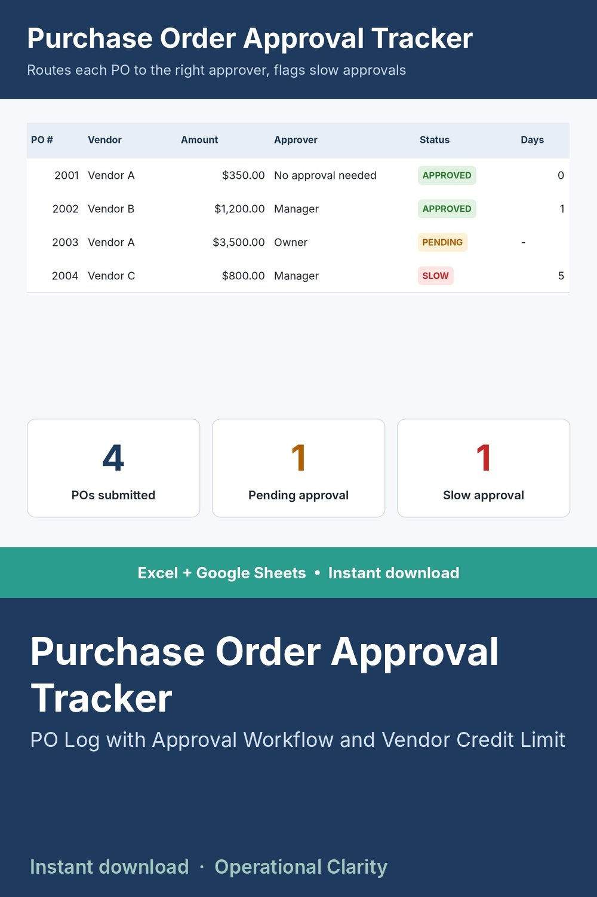

Purchase Order Approval Tracker

KNOW WHO NEEDS TO APPROVE A PO BEFORE IT GOES OUT - AND KNOW BEFORE YOU'RE OVER YOUR CREDIT LIMIT.
This sheet does two jobs most businesses track separately: it automatically routes each PO to the right approver based on dollar amount, and it tracks each vendor's credit limit exposure so you never get caught over-extended.
WHAT IT DOES
- Set your own approval dollar thresholds and approver names
- Log each PO: automatically shows who needs to approve it based on amount
- Tracks how many days approval actually takes and flags slow approvals
- Separate Credit Tracking tab: each vendor's credit limit, current balance, available credit, and status (OK / Near Limit / Over Limit)
- Dashboard shows POs pending approval, dollars pending, and vendors near their credit limit
WHAT'S INCLUDED
- Excel file (.xlsx) - no macros
- Start Here tab with setup instructions
- Sample data included
WHO THIS IS FOR
Small business owners and finance/purchasing teams who need spending oversight without a full ERP system.
INSTANT DOWNLOAD - no physical item will be shipped. Because this is a digital product, all sales are final.